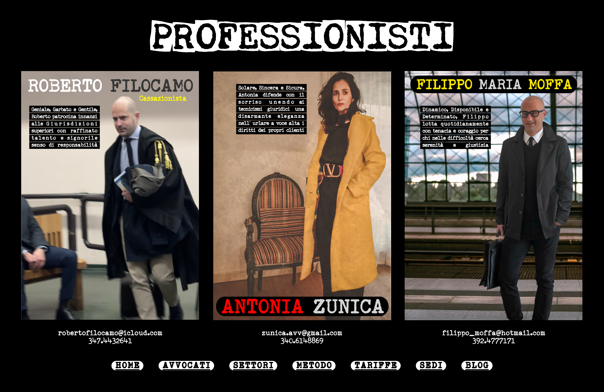

PROFESSIONISTI
ROBERTO FILOCAMO
Cassazionista
Geniale, Garbato e Gentile, Roberto patrocina innanzi alle Giurisdizioni superiori con raffinato talento e signorile senso di responsabilita
Solare, Sincera e Sicura, Antonia difende con il sorriso unendo ai tecnicismi giuridici una disarmante eleganza nell' urlare a voce alta i diritti dei propri clienti
ANTONIA ZUNICA
FILIPPO MARIA MOFFA
Dinamico, Disponibile e Determinato, Filippo lotta quotidianamente con tenacia e coraggio per chi nelle difficolta cerca serenita e giustizia
robertofilocamo@icloud.com
347.4432641
zunica.avv@gmail.com
340.6148869
filippo_moffa@hotmail.com
392.4777171